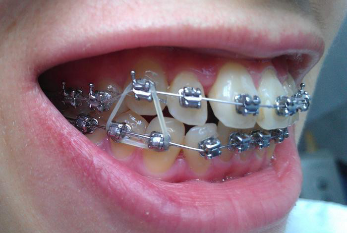
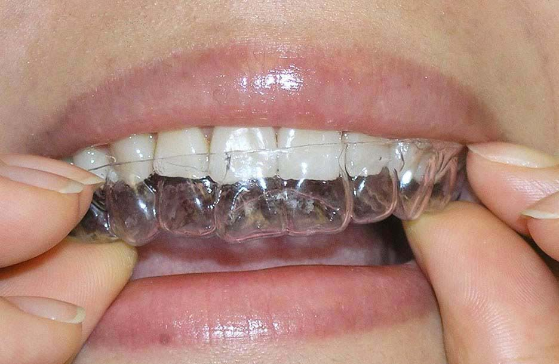
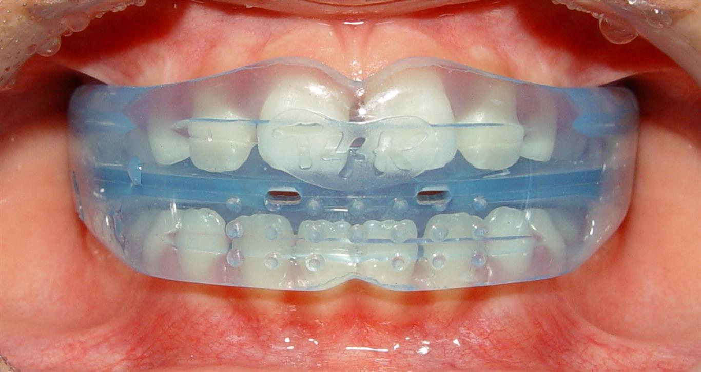
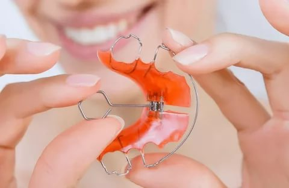

Проблемы неправильного зубного прикуса сегодня встречаются почти у 90% людей. В детском возрасте дефекты устраняются достаточно легко, так как челюстные кости еще не сформировались и проще поддаются коррекции. Исправление прикуса у взрослых проходит труднее – требуется гораздо больше усилий и финансовых затрат. Врачи- ортодонты в СФ «Скорпион» могут предложить достаточно много способов решения проблемы.
Чем опасен неправильный прикус?
- повышенная стираемость эмали зубов;
- ослабление и преждевременный износ височно-нижнечелюстного сустава, как следствие – головные и челюстные боли;
- увеличение риска поломки зубных протезов или невозможность их установки;
- раннее возникновение морщин и деформация овала лица;
- нарушение дикции;
- проблемы с работой органов пищеварения, поскольку из-за нарушений прикуса довольно проблематично и даже больно качественно пережевывать пищу.
Основные методы исправления прикуса.
Коррекция прикуса проводится при помощи различных ортодонтических аппаратов. При таком лечении происходит смещение отдельных зубов, восстанавливается правильное положение зубных рядов и челюстей.

1. Брекеты.
Это наиболее надежный способ коррекции прикуса у взрослых пациентов. Аппараты способны устранять серьезные деформации при уже сформировавшихся костях. Брекет-системы представляют собой пластинки, соединенные дугой. Они крепятся на зубах с внешней или внутренней стороны. Второй вид (лингвальные брекеты) более привлекателен с эстетической точки зрения, так как внешне приспособления абсолютно невидимы.
Брекеты механически воздействуют на зубы, постепенно смещая корни и растягивая ткань вокруг них. За счет этого меняется положение как отдельного зуба, так и всего ряда, что позволяет исправить даже серьезные аномалии прикуса.
Недостаток:
длительность лечения – носить их нужно в течение минимум года, а порой и нескольких лет. Кроме того, к системам довольно сложно привыкнуть, они вызывают болезненность слизистых и изменяют дикцию. На протяжении всего периода лечения нужно регулярно посещать своего врача, а после – носить специальные ретейнеры, которые позволят закрепить зубы в новом положении.
Важно!
Брекеты требуют тщательного ухода: не только утром и вечером, но и после каждого приема пищи на гигиену придется уделять около 7-10 минут. Поэтому самодисциплина – главное, что требуется от пациента во время ношения такой ортодонтической конструкции.
Современные брекет-системы делаются из металла, керамики, пластика. Наименее заметными из внешних вестибулярных конструкций считаются сапфировые.

2. Каппы (элайнеры).
Зубные каппы (элайнеры) – это съемные прозрачные ортодонтические колпачки. Они создаются из полиуретана, силикона, термопласта и других аналогичных материалов. Они бывают только индивидуальными, то есть разрабатываются под конкретного пациента. Для начала делается слепок челюсти пациента, данные заносятся в компьютер и с помощью специальной программы прорабатывается план коррекции. На каждом этапе лечения (через две-три недели), проводится замена капп.
В отличие от брекетов, каппы практически незаметны, не причиняют дискомфорта при носке и не вредят зубной эмали.
Недостаток:
высокая цена и невозможность исправления серьезных патологий прикуса.

3. Ортодонтические трейнеры.
Трейнеры – это съемные прозрачные силиконовые конструкции, внешне похожие на каппы, но более массивные. Их применяют, чтобы выровнять отдельные зубы и нормализовать челюстные аномалии. Во взрослом возрасте трейнеры помогают при не слишком серьезных нарушениях. Также они способствуют нормализации глотания и носового дыхания, исправлению нарушений дикции.
Плюсом трейнеров является и то, что они надеваются только на ночь, а для дневной носки достаточно 2-4 часов. На начальном этапе коррекции подбираются эластичные конструкции, затем их заменяют более твердыми. Трейнеры просты в уходе и недороги.
Трейнеры бывают стандартными по форме, но лучше всего изготовить их индивидуально – так удастся добиться лучшего эффекта.

4. Ортодонтические пластины.
Ортодонтическая пластинка устанавливается на десны и небо, прикрепляясь к зубам специальными крючками. Она незаметна внешне, комфортна при ношении. Легко снимается и моется. Но эта конструкция более действенна при коррекции в раннем возрасте, у взрослых людей она не способна нормализовать прикус полностью. Как правило, пластинки ставятся на предварительном этапе – например, перед установкой брекетов.
Выбор ортодонтического аппарата – только за врачом, поскольку именно специалист сможет подобрать вариант, который позволит решить все патологии прикуса. Конечно, немало зависит и от самого пациента – его готовности тщательно следовать требованиям определенной методики. Тогда примененная для лечения система окажет максимально эффективное действие.
|